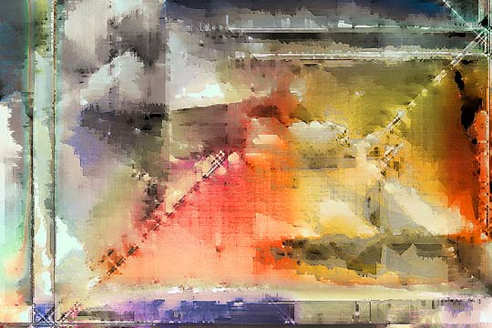

Diane Vetere
abstractions
Diane Vetere
abstractions
Diane Vetere was born and lives in Toronto, Canada. She studied fine arts at the University of Waterloo. She says, "From MacPaint in the 80s to Photoshop today I've had this ongoing love affair with the computer. The computer allows me to see things in exciting new ways--heightening perceptions and challenging conceptions. I can manipulate color and form in surprising and delicious ways that delight me. There is always an element of surprise and discovery in every piece I do." Her abstractions are particularly influenced for color by Mark Rothko. She has also evolved a method using a flatbed scanner to create 3d images of flowers. Two of her scans conclude her exhibit here.
 |